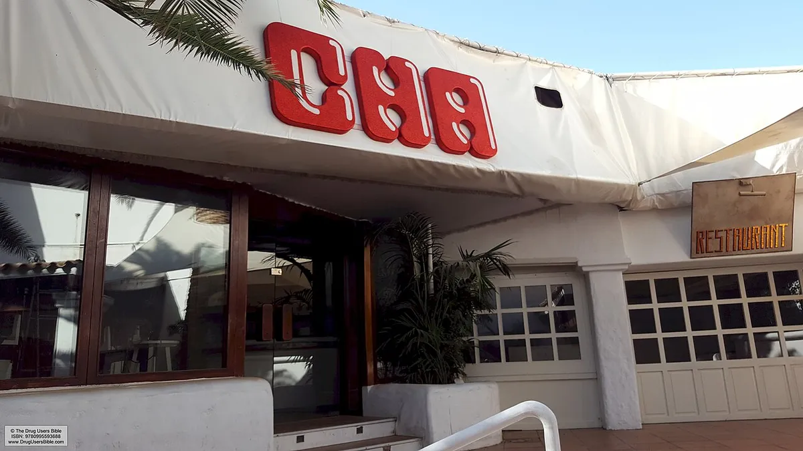
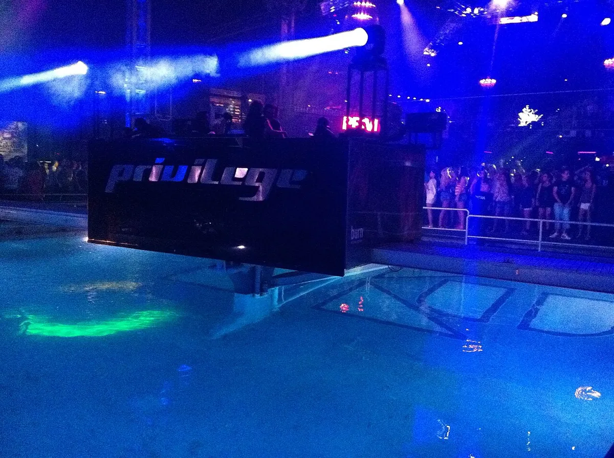

Ibiza clubs
The best clubs in Ibiza: Pacha, Amnesia, Hï and the rest
Two clubs from the 1970s, two that closed and came back under new names, and the best clubs in Ibiza for the season ahead.
A season, not a city.
Ibiza clubs run as a summer season on a small island: a handful of very large rooms and a calendar that starts with opening parties in spring and ends with closing parties in autumn. Most guides to the best nightclubs in Ibiza rank the rooms by size and ticket price. This one starts with where they came from, because the two oldest clubs on the island are fifty years old and the story of the rest is how they were built, renamed and replaced around them.
Pacha and Amnesia: the first two.

Pacha started on the mainland. Ricardo and Piti Urgell opened the first Pacha in Sitges, south of Barcelona, in 1967, and brought it to Ibiza Town in June 1973, with Piti as its first DJ. There are Pachas in other cities now, but the Ibiza club is still the one people mean.
Amnesia began as a farmhouse. Its owners, the Planells family, had held the finca in San Rafael for generations, and in May 1976 it was leased to the Madrid philosopher Antonio Escohotado, who turned it into a club. In the 1980s DJs such as Alfredo Fiorito, DJ Alfredo, played the open mixture of house and everything else at Amnesia that became known as Balearic beat. That is what four London DJs heard on the island in the summer of 1987 and took home, which is the start of the story told in the acid house guide. Amnesia's main room and terrace now hold around 5,000 people, and 2026 is its fiftieth season.
The clubs that closed: Ku, Privilege and Space.

Ku opened in 1979, also in San Rafael. It kept the name until 1995, when a change of owner turned it into Privilege, and by 2003 Guinness World Records listed it as the largest nightclub in the world, with room for 10,000 people over 6,500 square metres. Manumission, one of the island's most famous parties, ran there from 1994 until 2006. Privilege stayed shut after the summer of 2019.
Space opened in the early summer of 1986 in Playa d'en Bossa, took the shape people remember in 1989 under Pepe Roselló, and became famous for its terrace, right under the flight path into the airport, where the crowd cheered each landing plane. DJ Mag readers voted it the best club in the world in 2007, 2011, 2012, 2014 and 2016. It closed in 2016, and Carl Cox played a nine-hour set on its last night in September.
Both buildings are open again under new names. The Space site reopened on 28 May 2017 as Hï Ibiza. The Privilege site reopened on 30 May 2025 as [UNVRS], sold as the world's first hyperclub, still with room for 10,000. The same company, The Night League, runs both, as well as Ushuaïa.
The best clubs in Ibiza now.
| Club | Area | Open since | Known for |
|---|---|---|---|
| Hï Ibiza | Playa d'en Bossa | 2017, on the Space site | DJ Mag readers' number one club, 2022 to 2025 |
| Pacha | Ibiza Town | 1973 | The oldest club brand on the island, first opened in Sitges in 1967 |
| Amnesia | San Rafael | 1976 | Main room and terrace for around 5,000; its fiftieth season in 2026 |
| DC-10 | Salinas road | 1999 | Circoloco on Mondays |
| Ushuaïa | Playa d'en Bossa | 2011 | An open-air club in a hotel, finishing at 11pm |
| [UNVRS] | San Rafael | 2025, on the Privilege site | Billed as the first hyperclub, capacity 10,000 |
| Es Paradis | San Antonio | One of the oldest on the island | The club in San Antonio |
Hï is the current benchmark: two main rooms, the Theatre and the Club Room, and four DJ Mag number ones in a row. Ushuaïa, a hotel and open-air club in one since 2011, is a different kind of night, starting in the afternoon and finishing at 11pm, which suits people who want to go on somewhere else afterwards. DC-10, on the Salinas road, holds around 1,500 people over three rooms. Circoloco started there in 1999 as a free after-party that ran from six on Monday morning to six in the evening, and it is still the Monday that other clubs plan around.
Tickets, hours and line-ups change every week of the season. Check each club's own listings for the nights you are there.
Where in Ibiza to stay for clubbing.
Ibiza nightlife splits into three club areas. Playa d'en Bossa has Hï and Ushuaïa and is the best party location in Ibiza if the big clubs are the point. San Rafael, inland, has Amnesia and [UNVRS]. Ibiza Town has Pacha. San Antonio has its own strip of bars and Es Paradis, one of the oldest clubs on the island, which makes it the best club in San Antonio for most people, though the big rooms are all a drive away.
That Boiler Room set, filmed in a villa on the island in 2013 for its Ibiza Villa Takeovers series, shows how many of Ibiza's parties happen away from the clubs, at day parties and in private houses. The best day club in Ibiza is still Ushuaïa for most visitors, and the best club nights in Ibiza are often long-running residencies, such as Circoloco at DC-10.
The Ibiza season: opening and closing.
The Ibiza club season runs from late April to mid-October. Every club opens its summer with an opening party and ends it with a closing party. Closing parties run through September into October, and the last Circoloco of the season, on a Monday at DC-10, tends to be one of the final nights. Exact dates change every year and are announced by each club in spring.
Outside the season the big clubs are shut.
For the rest, the Selector plays a set at random from all 62,824 in the catalogue behind this site. The guide to the best clubbing cities in Europe puts Ibiza next to Berlin, Amsterdam and the others, and the Barcelona clubs guide covers the city most people fly through on the way.
Ibiza clubs FAQ.
What is the most popular nightclub in Ibiza?
Hï Ibiza, voted the world's best club by DJ Mag readers every year from 2022 to 2025. Pacha and Amnesia are the oldest and most famous.
Which club in Ibiza is better, Pacha or Hï?
They do different jobs. Pacha, open in Ibiza Town since 1973, carries the island's longest history. Hï, on the old Space site since 2017, is the one DJ Mag readers have voted the best in the world four years running. If you only have one night, choose by who is playing that night.
What are the famous clubs in Ibiza?
Pacha, Amnesia, DC-10, Ushuaïa, Hï and [UNVRS] now. From the past, Space, which closed in 2016, and Ku, later Privilege, which closed after 2019.
Where in Ibiza is best for partying?
Playa d'en Bossa, for Hï and Ushuaïa. San Rafael has Amnesia and [UNVRS], and Ibiza Town has Pacha.
When does the Ibiza club season close?
The season runs from late April to mid-October, with closing parties through September into October. Each club announces its own dates in spring.
Sources.
- Ibiza Spotlight: 10 surprising facts about Pacha Ibiza
- Wikipedia: The Pacha Group
- Resident Advisor: Get to know Amnesia and Pacha
- Wikipedia: Amnesia (nightclub)
- Wikipedia: Privilege Ibiza
- Wikipedia: Space (Ibiza nightclub)
- Wikipedia: Hï Ibiza
- Wikipedia: DC10 (nightclub)
- Wikipedia: Ushuaïa Ibiza
- Resident Advisor: Ibiza club Privilege to reopen in 2025 as [UNVRS]
- Mixmag: New Ibiza club [UNVRS] will open on former Privilege site in 2025
- Dirty Disco: The Best Ibiza Clubs in 2026
Continue reading
Read next.
 Festivals~13 min
Festivals~13 minWhat Is Burning Man? The Event, the City and the Music
A participant-built city in the Nevada desert, with no central lineup or main stage, and the sound camps and art cars that programme their own music.
Read article → Festivals~8 min
Festivals~8 minPrimavera Sound Barcelona 2027: Dates, Location and Music
The Barcelona festival returns to Parc del Fòrum on 3 to 5 June 2027: its waterfront location, scale, music and city programme.
Read article → Festivals~13 min
Festivals~13 minBest Electronic Music Festivals in Europe 2027, Compared
Fourteen major festivals and seven smaller ones, from Tomorrowland to Garbicz, compared by sound, scale, setting and 2027 dates.
Read article → Digging~14 min
Digging~14 minBest Boiler Room Sets of All Time, Ranked and Measured
Eighteen sets picked for what happens in them, beside the ten most-watched, counted across 8,206 Boiler Room recordings.
Read article →